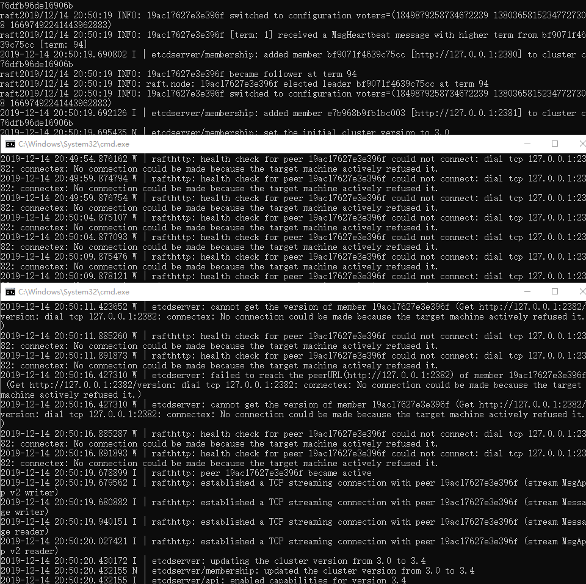
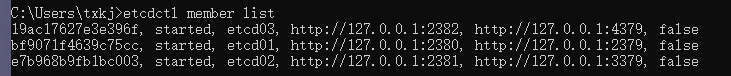

Preface
之前的环境比较复杂：我主机是windows，centos是vmware里面的虚拟机，docker又是centos里面的。
之前是打算在基于centos的docker搭建一个etcd本地集群来开发用，用作测试分布式服务发现，当然也可以用作分布式数据存储。
分布式数据存储也可以使用redis，在分布式数据存储这一点上etcd和redis各自的优缺点是啥，需要后面调查和验证一下。
在此略过。
Contents
分布式服务最少都是3个起步，都是奇数个，以匹配raft选举策略，所以需要配置3个服务。
配置文件
以下分别是1，2，3号etcd服务的配置文件：
1 | name: etcd01 |
1 | name: etcd02 |
1 | name: etcd03 |
启动脚本
1 | etcd --config-file=F:/software/etcd-v3.4.0-windows-amd64/etcd01.yml |
启动结果

查看一下结果：

最后一个false是啥意思:
1 | etcdctl help member list |
NAME:
member list - Lists all members in the cluster
USAGE:
etcdctl member list [flags]
DESCRIPTION:
When –write-out is set to simple, this command prints out comma-separated member lists for each endpoint.
The items in the lists are ID, Status, Name, Peer Addrs, Client Addrs, Is Learner.
最后那个boolean值得代表的意思是是否是learner,learner是区别与master与follower的角色，具体干啥的可以参考下面的参考连接。
Conclusion
整个过程不是很顺利，首先是按照官方的文档进行操作，windows会有奇怪的问题，于是改成了配置文件操作；
接着是windows的权限问题，整得很头疼；
现在是3个etcd服务器都跑起来了，但是etcdctl又用不了，第二天换成windows cmd line又可以了，当时用的是git bash；
Reference
Update
关于etcd与redis数据存储方面的疑问
etcd是分布式存储，强调是是节点之间的通信与同步，确保个节点上数据和事务的一致性，本身的单节点写入能力不强。
redis节点之间强调的是数据的一致性，并不在乎事务，所以读写能力很强，且支持的存储数据结构比较丰富，以及提供了例如incr，排序之类的东西。
关于redis的问题
redis主从之间的数据同步会有延迟，前不久遇到有人用redis替代rocketmq来做某些东西。
正式放到外网的时候出现了bug，多方研究发现内网是单节点redis，外网是redis cluster，连接到的sential数据有一定的几率数据更新不及时。